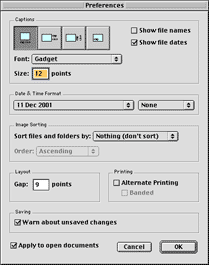

PhotoPressTM Frequently Asked Questions PhotoPressTM Frequently Asked Questions
PhotoPressTM Frequently Asked Questions PhotoPressTM Frequently Asked QuestionsPower Macintosh
32 megabytes of RAM
Mac OS 8.6 or later; Mac OS X 10.0.4 or later
CarbonLib 1.2 or later (or Mac OS X)
QuickTime 4.0 or later
PhotoGrid is designed to work with any Macintosh printer. However, printers vary, so for best results, please follow the printer-specific directions below.
Laser Printers (all models and manufacturers)
(Mac OS 8.6-9.x) If you are using a laser printer, please select the LaserWriter 8 driver from the Chooser.
HP InkJet Printers
Turn Alternate Printing off from the Preferences dialog.
Troubleshooting
Try changing the value of the Alternate Printing checkbox (choose "Preferences..." from the Edit menu or PhotoPress menu). A few printer drivers require alternate printing, some don't work well with it.
You might also want to experiment with changing Background Printing settings in the Print dialog.
Unfortunately, this is a limitation of the current version. Please split up your document. (Printing page ranges won't help.)
At present, you can download a 30-day trial, and purchase from within the application. Choose "About PhotoPress..." and click the "Buy" button (or use the "Buy" button when the application starts up). You'll need a credit card (Visa, MasterCard, American Express, or Discover/Novus) and an Internet connection.
We hope to offer more options soon.
Yes. You will need to reinstall it:
- Purchase PhotoPress while running OS X (or OS 8.6/9.x)
- Check your e-mail to receive a purchase confirmation
- Launch PhotoPress while running OS 8.6/9.x (or OS X)
- Click the "Buy" button
- Hold down the Option key and click the "Start" button (it will change to "Reinstall")
- Enter your e-mail address and order number
A few people have had trouble running the Installer unless they restart with no extensions (hold down the shift key at startup time).
The application "PhotoPress" could not be opened because "CarbonLib" could not be found.
This error message can mean you have disabled extensions by holding down the Shift key at boot time -- restart and make sure CarbonLib is activated. Or you may need to run the Installer again.
Please contact us at support@electricfish.com. (Send any suggestions for improvements to this address as well.)
If you're having trouble running the program, it's helpful to include as much information as possible about your system configuration. Some useful information is in the About box.
Home | Services
| Products | Consultants
| Clients | Corporate
| Related | WashTech